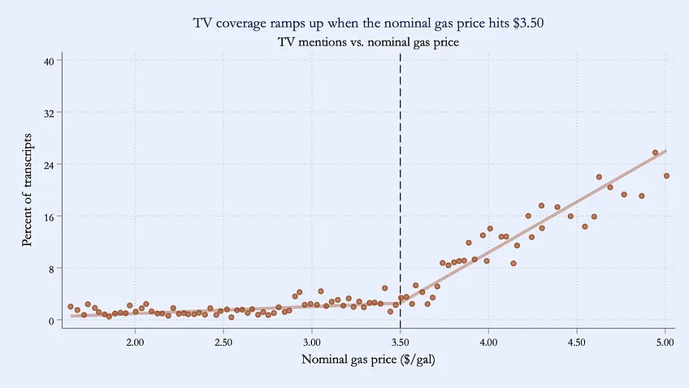
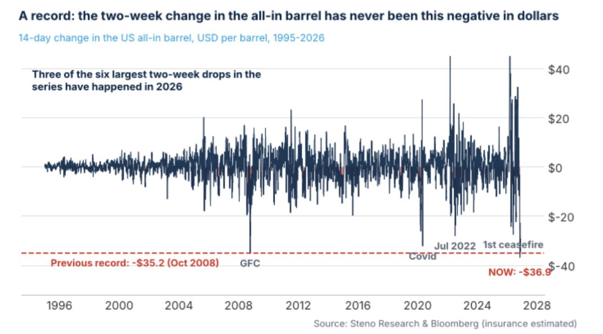

The unwind, and what it means for Canadian housing.
Talking points for Dan Foch and Simon Bélanger (@Fiat_iceberg). Richard Dias, CFA, may join. Arrow keys or swipe to move.
Press → to start
The Canadian Investor · Livestream notes
The tape · mid-session
The Nasdaq slipped negative for 2026.
Source: TradingView snapshot of Nasdaq Composite (INDEXNASDAQ: IXIC), Nov 20, 2026, 11:04 AM EST, circulated with The Kobeissi Letter. The snapshot is mid-session, not the official Friday close. At that timestamp the index was 23,215.22, just through the implied 2025 close. Dow Jones / FactSet: Oct 6 close 27,599.79 was +18.75% YTD (Kobeissi’s “+19%” is a rounding of that peak); Nov 19 close 23,879.20 was still +2.74% YTD. Confirm the official Nov 20 close before going on air.
Rebuilt from FRED series NASDAQCOM (NASDAQ OMX Group), daily closes Jan 2 to Nov 19, 2026; 2025 close 23,241.99 (Dec 31, 2025). The red point is the 11:04 AM ET TradingView snapshot above, not a close.
The Canadian Investor · Livestream notes
Poster’s claim · label it as such
BullTheory: top AI stocks are down 53% from the peak.
Recreated from @BullTheoryio’s chart · their numbers
Dot-com bubble
2000 – 2002
−89%
Average crash of top stocks
11% left
Down 50%+44 of 44
Lucent−97%
Amazon−94%
Cisco−89%
Oracle−84%
Nvidia−83%
Intel−82%
Nasdaq−78%
2008 crisis
2007 – 2009
−87%
Average crash of top stocks
13% left
Down 50%+44 of 45
Lehman Brothers−100%
Fannie Mae−99.6%
AIG−99.5%
Citigroup−98%
Bank of America−93%
Morgan Stanley−87%
S&P 500−57%
AI bubble
2025 – now
−53%
Average crash of top stocks
47% leftDot-com bottom
Down 50%+22 of 39
CoreWeave−76%
SanDisk−68%
Oracle−66%
Intel−63%
Arm−62%
Nvidia−39%
S&P 500−8%
Source: @BullTheoryio, Nov 20, 2026, 7:32 AM ET. The 39-name universe, the −53% average, the 5-month window, and the single-stock figures are the poster’s claims. The Nasdaq −78% (2000–02) and S&P 500 −57% (2007–09) index drawdowns on the chart match the standard peak-to-trough ranges; the “top stocks” averages are their basket math. The S&P “−8%” on the chart is a pre-open Nov 20 figure, not the Friday afternoon print.
Recreated in HTML/CSS from the numbers printed on @BullTheoryio’s chart (averages, “% left”, down-50%+ counts, single-stock and index drawdowns). No values added or estimated. The original shades the first row of squares in the dot-com and 2008 grids darker without a legend; that shading is kept as drawn.
The Canadian Investor · Livestream notes
Monday Nov 23 · mid-session, not a close
Nvidia bounced about 31% from Friday’s $125.53 close after the board reinstated Huang.
The board unanimously reinstated Jensen Huang as president, CEO and director.
Official release: the board received “input from senior levels of the United States government” and believes his return poses no national-security risk. Confirm Monday’s official close before air.
Sources: Nvidia board release, Nov 23, 2026; Semafor; CNBC; Yahoo Finance. White House communications director Steven Cheung: “President Trump was totally involved and this is a great decision by the NVIDIA board. We have to protect our geniuses.” Semafor reported that Trump personally joined a board meeting; “intervened” is Kobeissi’s wording, not Cheung’s quote. Trump told CNBC, “I made the deal.” The resignation announcement was Nov 12; the board accepted it Nov 11.
Only verified prints are plotted: Nov 6 close $186.64; Nov 12 close $166.19; Nov 20 close $125.53; Nov 23 about $165 at 2:24 PM ET, session high $171.50 and low $156.93. Nov 6 to Friday was −32.7%; Nov 12 to Friday was −22.9%; Friday to the Monday snapshot was about +31.4%.
The Canadian Investor · Livestream notes
Satire · not a study
Jack’s CEO-Affair Index counts reported affairs, from Schmidt at 7 to Byron at 1, and never plots returns.
This image counts reported affairs: Eric Schmidt 7; Jensen Huang 3+; Bill Gates 2; and one each for Bezos, Welch, Stonecipher, Krzanich, Phillips, Black, Freixe and Byron.
It has no shareholder-value axis. We did not independently verify every count. Guest credit: Simon (@Fiat_iceberg).
Source image: Jack Kuveke, X, Nov 2026. Huang’s 3+ footnote cites NYT, WSJ and Reuters, with one admitted. This is satire. Bars are the counts printed on Jack’s chart, redrawn. Huang’s bar is drawn at 3 and labelled 3+ because the chart gives no exact number.
Actual research: Griffin, Kruger and Maturana, PNAS, July 30, 2019: after controls, firms with an Ashley Madison CEO or CFO had a 5.6-point higher probability of a securities class action or restatement, against a 5.6% unconditional rate. AM use is an imperfect proxy and the result is correlation, not causation. Cline, Walkling and Yore, Journal of Financial Economics, 2018: 325 executive-firm cases from 1978–2012; Drexel’s write-up reports an average three-day loss of 1.6% (about $110M), or 4.1% (about $226M) when the executive was the CEO.
The Canadian Investor · Livestream notes
Verified prints · session still open Friday afternoon
Anthropic fell to within a nickel of its $83 IPO price.
Thursday, official: opened $111.50, high $115.10, closed $97.17, up 17% from the $83 offer.
Friday session low was $83.05 — 27.8% below that high, and five cents above the IPO price. That is a low, not a close. By mid-afternoon Fortune had it back around $87.
Sources: Axios; Fortune, updated 2:15 PM ET Nov 20, 2026; BBC; Yahoo Finance historical prints for Thursday (open $111.50, high $115.10, low $92.72, close $97.17). The Friday $83.05 low and “roughly $87” bounce are Fortune’s mid-session figures. Confirm the official Friday close before going on air.
The Canadian Investor · Livestream notes
Final IPO prospectus · committed spend, not debt
Wall Street expects Anthropic’s debt to be rated junk, against $900.9 billion of compute commitments.
$900.9B
Substantially all compute and infrastructure purchase and lease commitments.
Some bond-fund managers expect a BB-range rating. That is a debt-market expectation, not a published Moody’s, S&P or Fitch rating.
Sources: Anthropic final IPO prospectus, Form 424B4, Nov 19, 2026; Wall Street Journal. About $70.7B is due in the 12 months after Sept 30, 2026; about $451.6B is expected before Dec 31, 2030; substantially all the remainder is due from 2031–2045. This is committed spend, not debt already borrowed. No bond size, coupon or spread is assumed.
Official IPO close: about $93.5B gross including the greenshoe, plus a $26.0B concurrent private placement, about $119.5B combined. Friday ANT close $88.91; session low $83.05. Q3 GAAP operating loss was $0.567B. The nine-month net loss of $104.039B was dominated by a $94.324B non-cash fair-value charge. Anthropic was founded in 2021.
The Canadian Investor · Livestream notes
Apollo estimate · gross contribution, not a BEA AI line
Apollo says AI-related investment added 1.27 points, about 65% of US growth through Q3.
1.27 pts
Against about 2.02% compounded growth over the first three quarters, 1.27 is about 63%, rounded to “about 65%.”
Apollo’s caveat: gross figures that do not net out imports.
Source: Apollo and BEA figures via The Kobeissi Letter. BEA has no official “AI” line, and 1.27 is not a BEA print. Official BEA Q3 advance estimate, Oct 29: Q1 +2.5%, Q2 +2.2%, Q3 +3.4% SAAR, about +2.02% compounded over the three quarters. The 0.01 communication-and-power bar appears on the source chart but not in Kobeissi’s post text.
Bars reproduce only the source chart’s numbers: +0.01, +0.07, +0.16, +0.21, +0.37 and +0.45 percentage points; highlighted total +1.27.
TCI Thursday Macro · 09 / The AI feedback loop
Energy & AI infrastructure
Data centres could consume nearly 12% of US electricity by 2030.
2.5×Data centre share, 2024 → 2030
+457 TWhAnnual data centre demand, 192 → 649 TWh
+52 GWEquivalent average load, not installed capacity
US utility-scale generation rose 8.5% in 2015–2025. The 2030 bar is approximate electricity requirements, not promised generation. The line includes conventional computing and connects published observations; it is not a measured annual series.
A temporary hardware surplus?Possible price pressure and weaker new GPU / HBM orders · TCI causal hypothesis
FT report · Nov 26
4 countries
Shipment halt: Malaysia, Singapore, Thailand, Indonesia. Duration uncertain.
Quartz / Liquid Compute
−7%
B300 rental index, October → Nov 24, 2026. One index, not a market-wide price.
FT report · Nov 26*
≈$500M
Credit reportedly paused for Aolani’s planned ByteDance compute project.
A timing mismatch can develop even with strong long-term AI demand. BIS covers five destinations, also Brazil; qualifying US-headquartered buyers have an exception subject to reporting. Resale offers are not completed sales.
A temporary bottleneck could trigger a broader downturn.
CIBC · AI share of US real GDP growth
≈10%2024
≈23%2025
≈30%2026F
Investment net of imports + estimated wealth-driven spending. 2026 is a forecast.
KPMG hypothetical stress scenario
−32.5%Cumulative equities
$22TInitial wealth loss
≈−1%GDP headline estimate
−25% in one quarter, then −10% the next; $22T is the initial quarter’s loss. Not a base case.
Federal Reserve · 2025 SCF
28% of measured spending comes from the wealthiest 10% of families. Excludes rent, mortgage payments and retirement contributions.
What could interrupt the loop? GPUs find new buyers, power arrives sooner, or productivity and earnings validate the investment. Long-term AI potential and the semiconductor cycle can diverge.
CIBC Economics · KPMG, Nov 2026 · Federal Reserve, Oct 9, 2026. KPMG’s detailed quarterly GDP changes are −0.5% and −1.2%; ≈−1% is its headline summary. Equities: 0.75 × 0.90 − 1 = −32.5%. Arrows show TCI’s hypothesis, not an estimated causal model.
The Canadian Investor · Livestream notes
TCI macro · The AI investment cycle
Big Tech capex and Nvidia’s revenue growth
Combined cash capex$230.4BSept. 2026 · +118% YoY
Nvidia data centre$107.6BOct. 2026 · +110% YoY
Nvidia hyperscale$60.1BOct. 2026 · +71% YoY · 55.9% of total
■ MSFT + AMZN + ORCL + GOOGL + META cash capex━ Nvidia total data centre━ Nvidia hyperscale (subset)
Calendar quarter of period end; periods are not exactly aligned. Nvidia: Jan/Apr/Jul/Oct; Oracle: Feb/May/Aug/Nov; others: Mar/Jun/Sep/Dec. Total corporate cash capex includes non-AI spending and excludes some noncash lease-financed investment. Hyperscale is a subset, not additive. Latest capex × 4 = $921.688B annualized, not a forecast. Latest Nvidia period ended Oct. 25, 2026. Missing observations remain blank.
Recreated from @cryptorover’s image · crypto, price and 24h %
BTC59665.70−2.86%
ETH1659.43−3.78%
BNB548.09−3.32%
XRP0.9069−5.47%
SOL68.18−5.31%
TRX0.3029−1.87%
HYPE61.12−5.77%
DOGE0.0538−5.40%
ZEC773.15−8.50%
LINK8.35−4.79%
ADA0.1399−5.15%
XLM0.1265−3.98%
BCH190.88−5.81%
GRAM0.9940−1.88%
LTC39.90−3.46%
HBAR0.0514−3.24%
AVAX6.47−4.99%
SHIB0.00000355−4.57%
SUI0.6533−5.11%
UNI4.4250−6.78%
TAO176.10−4.81%
NEAR2.8290−5.92%
AAVE96.62−5.26%
PUMP0.0023−7.56%
WLFI0.0446−2.62%
ONDO0.2754−4.41%
ENA0.0974−4.51%
PEPE0.00000337−5.34%
SKY0.0438−2.36%
WLD0.2327−4.98%
DOT0.6590−5.45%
ICP2.0060−4.97%
POL0.0745−4.49%
ATOM1.2130−3.27%
RENDER1.2550−6.41%
JUP0.2212−3.99%
Recreated · US stock treemap moves, morning Nov 20
NVDA−6.08%
MSFT−0.88%
AMZN−1.07%
AVGO−8.36%
AMD−8.35%
META−2.98%
ANT−9.97%
TSLA−2.92%
SPCX−6.04%
JPM−0.91%
MU−9.88%
ORCL−5.18%
PLTR−3.76%
CRWD−4.37%
PANW−3.01%
APP−5.88%
NET−7.10%
INTC−2.20%
TXN−3.89%
ANET−9.39%
DELL−7.73%
APH−5.42%
ADI−4.20%
KLAC−6.62%
QCOM−1.70%
CSCO−1.30%
GE−1.29%
AMAT−7.76%
LRCX−7.47%
GEV−5.06%
ETN−3.71%
DE−1.24%
CAT−1.98%
MS−3.06%
GS−4.58%
C−2.77%
BLK−1.11%
BX−2.09%
BAC−0.84%
TMO−1.30%
DHR−1.84%
ISRG−0.55%
Bitcoin, Nov 20 · CoinGecko
−$45.8B bitcoin market cap, 10 to 11 AM ET
−$10.8B ether, same hour
Context, not a check of the $80B all-crypto total.
Source: @cryptorover, Nov 20, 2026, 11:01 AM ET. The $1 trillion / 60-minute and $80 billion crypto totals are the poster’s claim and were not independently verified from an official market-cap series. The image itself has no market-cap total. Use the official index moves (Nasdaq, S&P) on air, not the unverified headline. ANT is visible on the treemap at −9.97% in this morning snapshot.
Tiles recreated from the numbers legible in @cryptorover’s image (36 crypto prices and % moves; 42 stock moves). Treemap tile sizes are not reproduced; tile colour scales with the % move. Bitcoin line and the market-cap changes: CoinGecko public API, 5-minute data, pulled Nov 20 evening. CoinGecko had BTC at $59,700 at 10:50 AM ET, in line with the image’s $59,665.70.
The Canadian Investor · Livestream notes
The tape
CNN Fear & Greed at 14, Extreme Fear.
Nov 20 · 11:05 AM ET
14
Extreme Fear. Previous close 18, one week ago 37, one month ago 28, one year ago 5.
Source: CNN Fear & Greed Index screenshot circulated by The Kobeissi Letter, last updated Nov 20, 2026 at 11:05:07 AM ET, reading 14. Previous close 18; 1 week ago 37; 1 month ago 28; 1 year ago 5. Kobeissi’s “down 26 points in 8 days” and “lowest since the March 30 bottom” are the poster’s claims — the same snapshot’s one-week comparison is 37, not 40, and it does not show the March 30 reading. This is an 11:05 AM ET print, not a close.
Rebuilt from CNN Business Fear & Greed graph data, daily readings Nov 20, 2025 to Nov 19, 2026 as published by CNN; bands are CNN’s (0–25 Extreme Fear, 25–45 Fear, 45–55 Neutral, 55–75 Greed, 75–100 Extreme Greed). The final red point is the 11:05 AM ET snapshot reading of 14.
The Canadian Investor · Livestream notes
Official Friday close · Nov 20
CNN Fear & Greed closed Friday at 10, Extreme Fear.
Nov 20 · 6:59:52 PM ET
10
Endpoint 9.67, displayed by CNN as 10. Previous close 18.68; one week ago 37.37; one month ago 28.74; one year ago 5.17.
This was not the lowest 2026 close. March was lower, including 5.77 on March 30.
Source: CNN Fear & Greed official data endpoint, as of Nov 20, 2026, 6:59:52 PM ET. This is the official Friday close; the prior slide’s 14 was the 11:05 AM mid-session print.
Existing CNN daily series is unchanged. This chart appends only the official Nov 20 close of 9.67; no other daily value was added.
The Canadian Investor · Livestream notes
Official Walmart Q3 FY27
$188.8 billion in revenue. Over $2 billion in diesel and freight.
Total revenues
$188.8B
Official total revenues $188.835 billion, up 5.2%, quarter ended Oct 31, 2026.
Diesel and transportation
Over $2B
CFO John David Rainey, Nov 19 call: “between diesel and transportation, it will be over $2 billion of incremental costs that we’ve had to navigate this year.”
Sources: Walmart Q3 FY27 earnings release and earnings-call transcript, Nov 19, 2026. The post said “roughly $2B”; the official wording is “over $2 billion,” and it is diesel and transportation, not just fuel. The release does not tie that $2 billion to Canadian diesel or Canadian consumers.
The Canadian Investor · Livestream notes
Front-month futures · Oct 30 to Nov 20
Commodities just had a brutal November.
US gas at $3.66 (AAA, Nov 21), Canada pump 143.4 c/L (CAA, Nov 21) vs 171.2 a month earlier; Canada’s October CPI still had gasoline +30.9% y/y, so this unwind hasn’t hit CPI yet.
Bars are those verified front-month percent changes. Declines are red; natural gas, the only gain, is teal.
The Canadian Investor · Livestream notes
AAA retail fuel · Nov 21
US regular gas is $3.66 a gallon, nearing the $3.50 coverage threshold.
Original chart · Briefing Book · TV coverage vs nominal gas price

$3.66
AAA regular, down 14.2% from $4.2644 a month earlier, but above $3.0935 a year ago.
AAA diesel $5.8649. EIA’s older weekly print was $3.805 for Nov 16.
Sources: AAA national averages, Nov 21, 2026; EIA weekly retail gasoline, week ended Nov 16, released Nov 17; Cummings, Fraccaroli and Mahoney, Briefing Book, May 6, 2024. The $3.50 kink is a relationship in their nominal-price media-coverage chart, not an official threshold.
Canada: CAA national average 143.4¢/L as of Nov 21, 4:00 AM, down from 171.2¢ a month earlier. Canada October CPI gasoline was still +30.9% y/y; that print ends Oct 31.
The Canadian Investor · Livestream notes
January 2027 WTI · Monday Nov 23
January WTI hit a session low of $79.87, its lowest since late August.
$79.87
Yahoo at 3:47 PM ET: last $80.13; high $83.95; low $79.87.
Friday’s January settlement was $83.41. The $83.98 figure was December WTI. Confirm Monday’s official CME settlement before air.
Sources: original Barchart CLF27 image stamped Nov 23, 11:13 CT; Yahoo Finance CL=F at 3:47 PM ET; official Friday settlements. Yahoo daily lows: Aug 25 $79.62, Aug 26 $80.65. Monday’s $79.87 was below Aug 26 but above Aug 25, so the tight read is “lowest since Aug 25.” This is January WTI, not Brent.
Yahoo Finance CL=F, the NYMEX WTI front-month continuous series, daily closes Aug 24 to Nov 23, pulled Nov 26. Like Barchart’s daily nearby chart, it follows whichever contract is nearest; January 2027 is the front month on Nov 23. Yahoo’s Nov 23 close is $80.17.
The Canadian Investor · Livestream notes
Constructed series · not official futures
Steno’s all-in barrel fell $36.9 in two weeks, and Waller is talking about a 50 basis-point hike.
Original Steno Research chart · 14-day change

−$36.9
Steno’s constructed raw oil plus shipping, insurance and crack-spread series.
Verified WTI Nov 6 to Nov 20: $90.83 to $83.98, down $6.85 or 7.5%.
Source: Steno Research. “Worse than Lehman and Covid,” −$36.9, and the prior −$35.2 October 2008 record are claims from Steno’s constructed series; it cannot be reproduced from listed crude futures alone. Yahoo Finance verifies the separate WTI comparison.
Fed Governor Christopher Waller, official Nov 10 speech: if October CPI resembled prior readings, “a 50 basis point hike in the policy rate should be considered at the December meeting.” On CNBC Nov 18 he said 50 bp was probably necessary at the Dec 8–9 FOMC, or 25 bp plus a clear January signal, and spoke of needing to “shock people.” Treasury Secretary Scott Bessent argued against a big hike Nov 20, citing cheaper delivered crude. Canada’s October CPI still had gasoline +30.9% y/y.
The Canadian Investor · Livestream notes
Front-end stress
Treasury sold a 9-day bill, the first since July 2008.
Source: chart via Barchart / ZeroHedge, sourced to TreasuryDirect auction data. Official TreasuryDirect results (R_20261119_4.pdf): 9-Day Cash Management Bill auctioned Nov 19, 2026, $15 billion offering, CUSIP 912797VA2, issue Nov 24, mature Dec 3, high discount rate 3.910%, investment rate 3.968%, bid-to-cover 3.97. Fiscal Data records a prior 9-day auction on July 21, 2008 ($9 billion, high discount 1.565%).
Rebuilt from U.S. Treasury Fiscal Data, Treasury Securities Auctions Data (all 10 auctions with security term 9-Day, 1981–2008), plus the TreasuryDirect securities record for CUSIP 912797VA2 (Nov 19, 2026). Offering amounts; hover for the high discount rate.
The Canadian Investor · Livestream notes
Verified mid-session · 3:06 PM ET Nov 20
Five of the six named banks are in a bear market. Wells Fargo is not, yet.
@macropaperr said 6 of the 10 largest US banks were in bear territory, and had Wells Fargo at −20.1%. That −20.1% is not current — it matches an earlier Oct 14 post.
Mid-session, WFC is 18.8% below its Jan 5 high. Bank stress still matters for housing: tighter credit pushes against the rates tailwind.
Sources: @macropaperr, Nov 20, 2026, 1:09 PM ET; Yahoo Finance last prices around 3:06 PM ET Nov 20 vs each name’s 52-week high (BAC $65.23 Aug 17, WFC $97.76 Jan 5, GS $1,153.99 Jul 15, MS $232.25 Jul 15, COF $259.64 Jan 6, C $147.96 Jun 18, ^BKX 195.55 Aug 17). Mid-session, not the official Friday close. The 20% line is the usual bear-market threshold. KBW is 18.2% below that high, or 17.5% below the Aug 14 record close of 193.91; Friday’s 159.62 session low is the lowest since April 7, which supports the poster’s “7-month low,” as a low, not a close.
Bars use the verified mid-session figures above, unchanged.
The Canadian Investor · Livestream notes
The long view
Young-to-old transfers got a lot larger.
Income taxSocial contributionsPublic pensionsOther benefitsHealth careNet
US 1979
US 2024
UK 1979
UK 2024
Recreation of John Burn-Murdoch, Financial Times, “How pensions ate the state,” Nov 20, 2026. Taxes paid versus benefits and services received per person, by age, inflation-adjusted, in $ or £ thousands. Values were read off the published chart and rounded to the nearest 0.5; they are approximate, not the FT’s source data. The US panels run through 85+. The UK panels in the source image stop at 75–84. The original image is kept in the repo and is not shown.
The Canadian Investor · Livestream notes
The 1-in-4 claim, visualized
One euro in four.
This is just the official FT #shorts figure, drawn as a share: pensions versus everything else in that public-goods-and-services bucket, for France, Spain and Italy.
It is not a G7 average, and it is not a Canadian number.
Source: Financial Times / John Burn-Murdoch official #shorts, Nov 20, 2026. Chart.js visualization of that stated 1-in-4 share only — no other values were estimated from the FT graphic.
The Canadian Investor · Livestream notes
Employer perceptions · not a worker survey
53% of employers think staff would take a lifetime pension over ever owning a home.
57% of all employers, and 67% of healthcare employers, also think staff would accept a lower salary for a better pension.
These are employers’ beliefs about employees, not employees’ answers.
Source: HOOPP / The Logit Group, 2026 Canadian Employer Pension Survey, pp. 13–14, E2a/E2b, posted Nov 16. Online survey of 803 employers, Aug 21–Sep 8, 2026; stated margin ±3.5%; healthcare oversample n=350.
All employers: 53% guaranteed lifetime DB pension but never own a home, 47% own a home but no workplace pension. Healthcare: 58% vs 42%. Caveat: the all-employer sample is 56% Ontario and 35% healthcare; HOOPP is a large Ontario healthcare DB plan.
The Canadian Investor · Livestream notes
RBC Q2 2026 · Canada
Condo affordability has eased back toward 2017.
Canada condo apartment · Q2 2026
34.7%
Of median household income, against a long-term average of 33.3%. Down 0.5 ppt in the quarter and 2.6 ppts in a year.
Toronto condo: 35.3% vs a 32.6% average. Detached homes are still far above their averages.
Source: RBC Economics, Housing Trends and Affordability, Q2 2026, published Sept 28, 2026, via Dan’s post. National aggregate 52.8%, improved 0.4 ppt. Toronto aggregate 64.1% (−1.2 ppts). RBC’s prose says Toronto’s condo segment reached its most favourable level since 2017. The national condo line on this chart sits back near 2017 visually; the report text we verified does not give a national condo percentage or an explicit “national condo is back to 2017” sentence. Measure: ownership costs as % of median pre-tax household income; 20% down, 25-year, 5-year fixed.
Rebuilt from the Summary tables in RBC’s Sept 28, 2026 report (PDF p. 10): Q2 2026 measure and average since 1985 for Canada and the Toronto area, by category. RBC publishes no downloadable history, so the 1986–2026 lines on RBC’s original chart are not redrawn here.
The Canadian Investor · Livestream notes
RBC Q2 2026 · Canada
Income was the only thing helping affordability in Q2.
Original chart · RBC Economics · contribution data not published
Canada aggregate · Q2 2026
52.8%
Down 0.4 ppt in the quarter.
Aggregate benchmark price $797,400, up 0.1% from Q1.
RBC summary table, Sept 28, 2026.
Source: RBC Economics, Housing Trends and Affordability, Q2 2026, published Sept 28, 2026. Quote from the report: “Rising household income accounted for the entire affordability gain in Canada in Q2 as home prices and rates held fairly steady.” Chart sources on the image: RPS, Statistics Canada, Bank of Canada, RBC Economics.
The Canadian Investor · Livestream notes
Urbanation Q3 2026 · GTHA
GTHA pre-construction condo sales were 60 units in Q3, and the banks want Ottawa to guarantee the loans.
648 completed-building sales, 85% of the 760 total. Investment groups bought 339 units in bulk, 45% of all new sales, averaging $763 per square foot.
The roughly 40% discount is versus original launch prices in the same buildings.
Source: Urbanation Q3 2026 GTHA Condo Survey, released Oct 19. Pre-construction sales fell 61% y/y to 60, the 12th straight annual decline. Total new sales were 760, double a year ago but 78% below the Q3 10-year average. Completed unsold inventory was 5,127, down 7% from Q2’s record 5,485 but up 40% y/y. Q3 starts were 381 units in one project; YTD starts 2,696, 82% below the 10-year average. Units under construction fell 38% y/y to 35,920, the lowest since early 2012. Completions are scheduled to fade to 4,213 in 2029.
National Housing and Investment Initiative report, Nov 10: BMO, CIBC, RBC, Scotiabank and TD plus major developers seek an owner-occupied construction-loan program modelled on CMHC’s rental ACLP, with a partial CMHC guarantee when presales miss lenders’ usual threshold. No program exists. ACLP is a $55B low-interest, fully repayable rental loan program, not a guarantee; by March 2026, $30.82B had been committed to 78,200+ units. The article’s 70% presale line is not a verified official cutoff. CCPA’s Marc Lee told the Star the comparison does not hold up.
The Canadian Investor · Livestream notes
Leger Federal Politics · November 2026
56% of Canadians say immigration levels are already too high.
72% were concerned about the 2027 increase as Leger worded it, “approximately 600,000 permanent residents”: 44% very, 28% somewhat.
37% named pressure on essential services as the top concern; 21% named housing demand and costs.
No prior-wave comparison appears for Q8 or Q9.
Source: official Leger Federal Politics, November 2026, Q8–Q10, published Nov 18; Rob Breakenridge, National Post, Nov 21, is the column hook. Online panel n=1,522, fielded Nov 13–16. A classic margin of error does not apply; Leger says a probability sample this size would be ±2.5 points, 19 times out of 20. Decided voters n=1,328: Liberal 47%, Conservative 36%, Bloc 7%, NDP 6%, Green 3%. Carney approval 58%.
Official IRCC 2027–2029 plan: 380,000 regular PR admissions each year, plus a time-limited 2027 transition of up to 200,000 people already in Canada to PR, for up to 580,000, not 600,000. The extra group is already in the housing stock. “Record numbers” is Breakenridge’s characterization, not an IRCC line.
The Canadian Investor · Livestream notes
Dan on X · Nov 20, 3:40 PM ET
Cook wants another hike. Mortgage rates are already at 7.28%.
“A Fed governor dissented this fall because she wanted to hike MORE. US inflation 3.8%, mortgage rates already 7.28%. Everyone waiting for the rate cuts that fix housing should read this speech. Canada gets the bill for this too, through the bond market.”
— @danielfoch
Source: @danielfoch, Nov 20, 2026, 3:40 PM ET, x.com/danielfoch/status/2123879247617863959, with the linked speech. The dissent and the 3.8% inflation figure are from the post and were not re-verified here. BLS CPI-U all items (not seasonally adjusted) was up 3.7% year over year in September 2026; October’s 12-month change can’t be recomputed from the index because BLS published no October 2025 CPI.
Rebuilt from FRED MORTGAGE30US (Freddie Mac PMMS, weekly, Jan 6, 2022 to Nov 19, 2026) and DFEDTARU (Fed funds target range, upper bound; 3.75% to 4.00% on Sep 17, 2026). Same series as the chart on Dan’s post.
The Canadian Investor · Livestream notes
@PHfloor reply to Dan · Nov 20, 4:44 PM ET
US 5-year minus Canada 5-year. When does Canada start getting the bill?
Nov 19 close
1.33 pts
US 5-year 4.86% less Canada 5-year 3.53%. Canada is borrowing well below the US at the 5-year point.
Widest weekly gap in this data since 2001: 1.62 pts, Jan 31, 2025.
Source: @PHfloor, Nov 20, 2026, 4:44 PM ET, replying to Dan: “History of difference between US 5YR yield less Canada’s. When does Canada start getting the bill?” The attached TradingView chart (US05Y-CA05Y, weekly) read 1.320% intraday Nov 20.
Rebuilt from FRED DGS5 (US Treasury 5-year constant maturity) minus Bank of Canada Valet BD.CDN.5YR.DQ.YLD (GoC benchmark 5-year), last common daily close each week, Jan 5, 2001 to Nov 19, 2026. The Bank of Canada series starts in 2001, so the 1997–2000 stretch on the TradingView chart is not shown.
The Canadian Investor · Livestream notes
Dan’s answer · Nov 20, 6:12 PM ET
“If we don’t get it through yields we get it through CADUSD and imported inflation.”
The loonie
69.8¢
Bank of Canada, Nov 20: USD/CAD 1.4325, about 69.8 US cents per Canadian dollar.
A weaker loonie makes imports cost more in Canadian dollars. Opinion, not a forecast.
Source: @danielfoch, Nov 20, 2026, 6:12 PM ET, x.com/danielfoch/status/2123917517156749697, replying to @PHfloor. Bank of Canada FXUSDCAD daily rate for Nov 20, 2026: 1.4325.
Same spread as the last slide, plus CAD/USD (US$ per C$) calculated as 1 / FRED DEXCAUS (Fed H.10, noon New York), weekly to Nov 13, 2026, the latest H.10 print.
The Canadian Investor · Livestream notes
Bank of Canada · Dec 9 decision
Polymarket puts a December Bank of Canada hike at 78.5%. Swaps said about 80%.
Policy rate today
2.50%
A 25 bp hike on Dec 9 would take it to 2.75%.
Swaps, Nov 24: about 80% odds of a December hike, up from 65% before Macklem spoke (Reuters).
LSEG, Nov 25: 74% for December, 85% for a hike by January (Reuters).
GoC yields, Nov 25 close: 2-year 3.24%, 5-year 3.41%.
WOWA, Nov 26: 10-lender average 5-year fixed 5.01%, 5-year variable 4.21%.
Polymarket “Bank of Canada Decision in December?” and “Bank of Canada Decision in January?”, live Yes prices from the public Gamma API at Nov 26, 2026, 10:58 AM ET. Each outcome is a separate contract, so prices need not sum to 100%. The January market had about US$23K traded, against about US$388K for December. Swaps: Reuters, Nov 24, 2026, swap market data. LSEG: Reuters, Nov 25, 2026, 5:27 AM ET. BAX and CORRA futures prices were not available from a free public source and are not shown.
Yields: Bank of Canada Valet BD.CDN.2YR.DQ.YLD and BD.CDN.5YR.DQ.YLD, Nov 25, 2026, the latest posted close. Policy rate: Bank of Canada V39079 (2.50% since the Oct 28 hike), matching WOWA’s current rate of 2.5%. Mortgage averages: WOWA.ca, “Bank of Canada Interest Rate”, as of Nov 26, 2026.
The Canadian Investor · Livestream notes
Framing · opinion, not a forecast
What the AI/equity unwind means for Canadian real estate.
01 · Rates come first
The 5-year follows the bond bid.
A flight to bonds pulls down the 5-year GoC yield, and 5-year fixed rates follow. The 9-day bill is the front-end stress tell. Bank stress is the offset: tighter credit pushes against that rates tailwind. This builds on RBC’s point that income was the only thing helping affordability.
02 · Then the wealth effect
Tech-heavy buyers get hit first.
GTA detached and investor-condo buyers hold a lot of tech and AI stock. Move-up, luxury and 905 detached go first, and the last investor bid for condos disappears.
03 · Safe haven
T-bills, gold and USD.
Not illiquid, leveraged real estate. A rotation into hard assets, if it comes, comes later.
04 · Jobs decide it
2001 versus 2008.
In 2001 rates collapsed, jobs held, and housing was fine. The take: rates-positive, confidence-negative. Watch the 5-year yield and January’s jobs data.
Framing and opinion for the Nov 26 livestream, not a set of new numbers. Setup already on this deck: the Nasdaq year-to-date turn, the AI tape, the 9-day bill, the US bank drawdowns, and RBC’s Q2 affordability report.
The Canadian Investor · Livestream notes
That’s the stack
Watch the 5-year, and wait for January jobs.
Notes for Simon are on the usual Page. This deck lives at tcipodcast.ca/research.